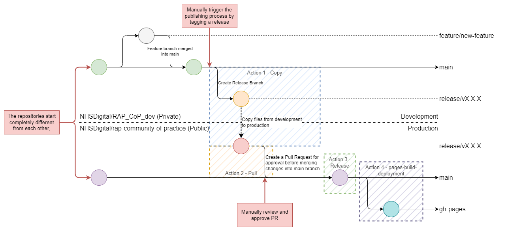
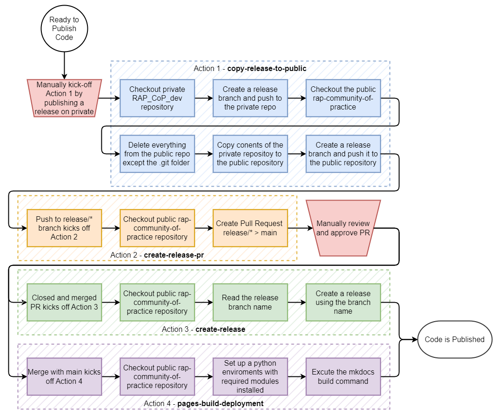
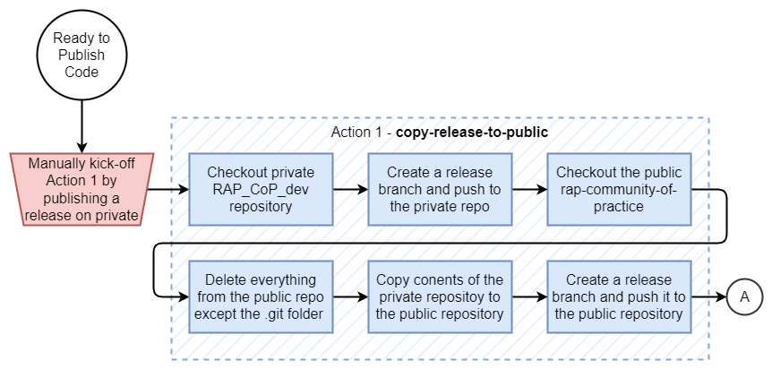
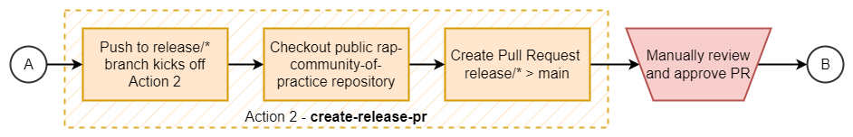
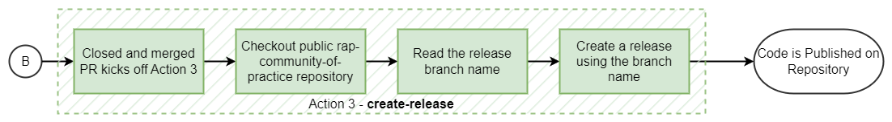
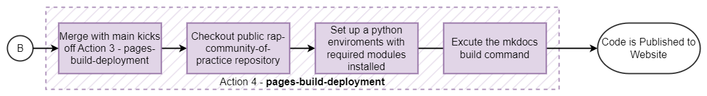
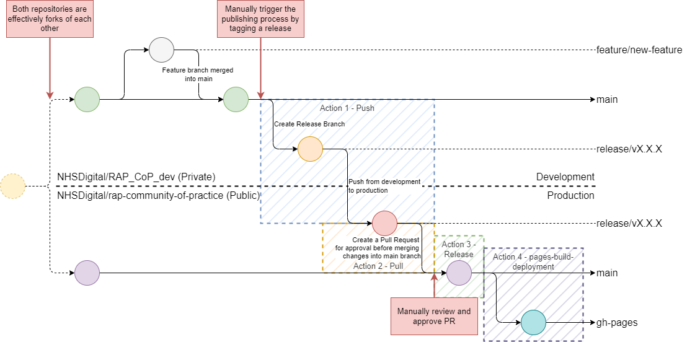
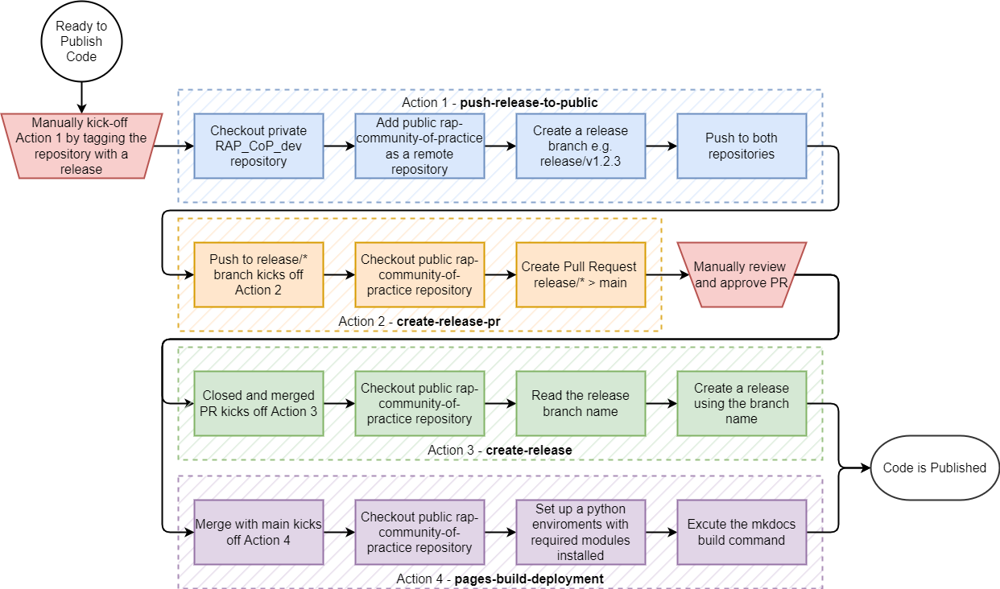

RAP Release Workflow
Current Release Process (coding in the open)
The new release workflow for the RAP Community of Practice is very simple.
flowchart TD
Z[make a branch or fork of the repo]-->A
A[make changes on the branch or fork of the repo]-->B[when complete make a pull request in main branch of this repo];
B-->C[pull request checked];
C-->F[approved and changes merged into the main branch];
C--Feed back given-->E[Make required changes];
E-->C;
F--At a significant milestone-->D[a release is made, bumping up the version of the repo and updating the visible website];It's important to note that the website is not built off the "main" branch - but instead it builds "on release".
This is described fully in the github action that builds the website: pages-build-deployment
Old release process (two repos, one private, one public)
The release process below is no longer in use!
- The RAP Community of Practice now uses a very simple release process - fully coded in the open.
- This page mostly details our old release process, where we had a hidden "dev" repo, which published to this public repo on release - we're leaving this guide up here so people can learn from it and use it (it would be useful for more sensitive work)
TLDR
- The RAP Community of Practice has embraced CI/CD by implementing an automated release process that uses GitHub Actions to move guidances written and reviewed in our private (RAP_CoP_dev) repository to the public (rap-community-of-practice) repository.
- The RAP Release workflow ensures control, flexibility, and consistency in the RAP CoP's releases.
- Key Steps:
- The contents of the release are copied from the private to the public repository.
- A pull request is created for the release for final merge approval to the main branch.
- The website pages are deployed using MkDocs when the release is merged into the main branch.
- Detailed YAML configurations and flowcharts explain each step in this RAP Release Workflow Guide.
The RAP Community of Practice exists on two repositories. The public rap-community-of-practice, where anyone can view our guidance, and the private RAP_CoP_dev, where guidance is written and reviewed before being published to the public repository. The public repository is then converted using MkDocs to HTML and hosted by GitHub pages as our RAP Community of Practice website.
The RAP Release Workflow allows the RAP Team to:
- Automate a repetitive but simple process with manual intervention
- Control when the release process occurs
- Easily maintain and change the process if required
The release process uses GitHub Actions to execute. GitHub Actions is a continuous integration and continuous delivery (CI/CD) platform that allows automation of processes. A highly beneficial feature of GitHub Actions is the ability to automatically run workflows when events happen in your GitHub repository; in our case, when a release is published, a branch is pushed to, a pull request is closed and merged, and a directory is updated.
The GitHub Actions are written using the YAML markdown language to execute, in this case:
- Pre-defined GitHub Actions, such as
actions/checkout@v3. - Shell scripts that run Bash, git, and GitHub CLI commands.
Other functionality, like setting up and using Docker containers, can be explored in the GitHub Actions documentation.
The process is made up of four distinct steps. One that runs on the private RAP_CoP_dev and the other three that run on the public rap-community-of-practice. The first figure below shows a Git Flow Overview of the deployment process and where the four actions are involved. The second figure below shows a flowchart of the release process, roughly summarising the steps within the actions.

Info
For clarity and simplicity, the Git Process diagram shows Action 3 executing before Action 4. They will execute roughly simultaneously in practice, although slightly different events trigger them.
The Release Process Flowchart (below) more accurately depicts the process flow.

Action 1 - Copy Release to Public RAP CoP Repo

Action 1 is kicked off by creating and publishing a release to the private RAP_CoP_dev. The release tags the repository with the semantic version number, e.g. v1.2.3.
Action 1 can also be manually dispatched in GitHub (or via an API call) due to the addition of the workflow_dispatch event trigger.
Action 1 executes one job, called copy-release. This job runs on the latest version of Ubuntu available through GitHub Actions, denoted by the runs-on: key. It is possible to run multiple jobs, some that run in parallel.
GitHub Actions provides the conditional if key to control when a job executes. Here, we only want it to execute in the private RAP_CoP_dev, so we check if the action is executing in it. If it weren't here, it would trigger this action again when we eventually publish a release in the public rap-community-of-practice. Instead, it will skip running this job when running in the wrong repository.
The push-release job contains nine steps.
Step 1 - Checkout private
The first, Checkout private, uses the pre-existing actions/checkout@v3 action provided by GitHub. This action clones a repository (by default, the repository the action is executing in) and configures git to be ready to use in the Action's running environment.
The with: key allows users to specify settings for executing the actions/checkout@v3. In this case, there are three, token and path.
token is used to set the Personal Access Token (PAT) that is used to configure git in the running environment. It is used not only to checkout the code but also in future git commands. By default, it uses ${{ github.token }}, which is a automatically generated PAT with access scoped to the Action's current repository. We need to access another repository in later steps, so we use ${{ secrets.EXTERNAL_REPO_TOKEN }}. This is stored in the repositories' secrets.
path specifies the relative path to place the repository. Usually, it is the current directory (path = ''). However, we want to checkout two repositories, which means we will set it to private to put it in that folder.
steps:
- name: Checkout private
uses: actions/checkout@v3
with:
token: ${{ secrets.EXTERNAL_REPO_TOKEN }}
path: private
Step 2 - Checkout public
With the private RAP_CoP_dev repository checked out, we move on to the second step of the push-release job, which checks out the public rap-community-of-practice repository into the folder public. Like above, we set token and path to the ${{ secrets.EXTERNAL_REPO_TOKEN }} and public, respectively. However, we also set repository to NHSDigital/rap-community-of-practice. This is the repository we want to checkout. By default is the current repository the action is running in, ${{ github.repository }}, but in this step, we are checking out the public repository, so set the value as specified.
- name: Checkout public
uses: actions/checkout@v3
with:
token: ${{ secrets.EXTERNAL_REPO_TOKEN }}
repository: NHSDigital/rap-community-of-practice
path: public
Step 3 - Read the release name and save it to the environment
The third step of the copy-release job reads the latest release name for the private repository using the GitHub CLI. This is all done using the run: key that allows Bash shell code to be run. The | enables multiple lines of code to be executed together.
The second line does a number of things:
- It uses the GitHub CLI command
gh release viewwithout a specified release tag to read the latest release from the current GitHub repository. The--json nameflag argument will result in the being a JSON object that only includes the release name. - The returned JSON object is then piped into the jq command-line JSON processor, which extracts the name key, with the
-rflag returning it as a raw string with no quotation marks. - The name string is then assigned to the
RELEASE_NAMEvariable and then echoed out to the action's environment,$GITHUB_ENV, where later steps can access it.
The second line builds the RELEASE_BRANCH variable by prefixing 'release/' to the RELEASE_NAME. This is standard practice to denote the branch type clearly.
Line three creates the release branch, with the following lines pushing the branch and setting the upstream to the private (alias origin) and public (alias public) remote repositories.
GitHub CLI can be configured to authenticate using the gh auth login command or will use the GITHUB_TOKEN environment variable. The environment variable is used and set with the env:GITHUB_TOKEN key to use the EXTERNAL_REPO_TOKEN PAT. The default GITHUB_TOKEN could also be used but is not used for consistency with earlier steps.
- name: Read the release name and create a branch. Push branch to private and public.
run: |
RELEASE_NAME=$(gh release view --json name | jq -r '.name')
RELEASE_BRANCH=release/$RELEASE_NAME
git branch $RELEASE_BRANCH
git push -u origin $RELEASE_BRANCH
git push -u public $RELEASE_BRANCH
env:
GITHUB_TOKEN: ${{ secrets.EXTERNAL_REPO_TOKEN }}
Action 2 - Create Pull Request for Release Branch

Action 2 is kicked off manually with a workflow_dispatch event or a push to a branch matching the pattern release/*. Therefore, Action 1 should trigger Action 2.
Action 2 has a single job, create_pr, which runs on the latest version of Ubuntu available, like Action 1.
It has a conditional if statement that checks that it is running in the public rap-community-of-practice repository. It does not need to run on the private RAP_CoP_dev repository, as the release branch is a snapshot of the current main repository.
jobs:
create_pr:
runs-on: ubuntu-latest
if: github.repository == 'NHSDigital/rap-community-of-practice'
The create_pr job has two steps. The first step is to checkout the current repository using actions/checkout@v3. As the event was triggered by a push to release the branch, that branch will be checked out by default. A fetch-depth of 0 is used to get the complete commit history and allow git to determine the differences between the release branch and the main branch on the public rap-community-of-practice repository.
The next step runs the GitHub CLI command gh pr create to create a pull request to merge the release branch into main. The --fill flag will prompt the command to use the commit info to populate the pull request's title or body. If there is one commit, the commit summary will be the title. If there are multiple commits, the branch name is used as the PR title.
Like in Action 1, the GitHub CLI commands use the GITHUB_TOKEN environment variable to authenticate; however, Action 2 does not need to access another repository at any point, so the automatically created GITHUB_TOKEN can be used.
- name: Create Pull Request
run: |
gh pr create --fill
env:
GITHUB_TOKEN: ${{ secrets.GITHUB_TOKEN }}
The pull request must be manually reviewed and approved before it is merged into the main branch. Approving the pull request will trigger Action 3, and updating the docs directory on the main branch will trigger Action 4.
Action 3 - Create a Release

Action 3 is only triggered when a pull request is closed. This is because it requires the Pull Request's source branch to name the release branch.
Action 3 has one job, release-if-merged, which runs on the latest version of Ubuntu. There are a number of conditions that all need to be met to ensure that the action executes:
github.event.pull_request.merged == trueensures that the Pull Request was closed with a merge, not for another reason (e.g. the branch was deleted)startsWith(github.head_ref, 'release/v')ensures that the source branch for the Pull Request was a release branch.github.repository == 'NHSDigital/rap-community-of-practice'ensures that the release is being created in the correct repository, the public rap-community-of-practice. It should not execute in the private RAP_CoP_dev repository as it already has the release.
jobs:
release-if-merged:
if: |
github.event.pull_request.merged == true &&
startsWith(github.head_ref, 'release/v') &&
github.repository == 'NHSDigital/rap-community-of-practice'
runs-on: ubuntu-latest
The first step of release-if-merged uses the default actions/checkout@v3 as the standard token can be used, as only the current repository is accessed, and a snapshot of the current repository state is needed (fetch-depth: 1) to create the release.
The next step of the release-if-merged repository extracts the version information from the source branch of the Pull Request, which is stored in the HEAD_REF environment variable HEAD_REF. It then assigns it to the locally scoped RELEASE_NAME variable. The GitHub CLI command gh release create is then run, which creates a release. The RELEASE_NAME variable is then used to provide the tag value and the title of the release, with the rest of the release automatically populated.
Two environment variables are defined for this step:
GITHUB_TOKEN, which uses the automatically generated PATHEAD_REF, which captures the head_ref value that is assigned when a pull request triggers an action.
- name: Get Release Name from PR Branch Name and create a release
run: |
RELEASE_NAME=${HEAD_REF//release\//}
gh release create $RELEASE_NAME -t $RELEASE_NAME
env:
GITHUB_TOKEN: ${{ secrets.GITHUB_TOKEN }}
HEAD_REF: ${{ github.head_ref }}
A release with the matching version to the release on the private RAP_CoP_dev repository should now be published on the public rap-community-of-practice repository with the changes made since the last release.
Action 4 - Build and Deploy Website Pages

Action 4, is triggered on a push to the main branch with changes to the docs directory. It can also be triggered manually via a workflow_dispatch.
This action only has one job, deploy, which runs on the latest version of Ubuntu. No conditions are used, meaning the action can run on both the public rap-community-of-practice and private RAP_CoP_dev repositories. We don't mind if the action runs on the private repository; it is more of a nice-to-have, but the action must run on the public repository to ensure the RAP Community of Practice website is updated.
The repository is checked out with the actions/checkout command with the default settings as the first step of the deploy job.
The second and third steps set up the Python environment. Step two, actions/setup-python, installs python into the GitHub Action environment. The version specified by the python-version key, with the 3.X specification, which is the latest stable major version of Python 3.
Step three calls pip, the in-built Python package manager. Pip is instructed to install the packages listed in the requirements.txt file. This file includes the packages required to run MkDocs in the next step.
The final step runs mkdocs gh-deploy, which commands MkDocs to build the RAP Community of Practice website from the markdown pages in the public rap-community-of-practice repository and then push to the gh-pages branch. This branch is then used to display the website via GitHub pages.
Three flags are parsed with the command:
--force: Forces the push--clean: Removes old files from the website that are no longer in themkdocs.ymlfile.--verbose: Provides a more verbose command output for debugging.
Alternative RAP Release Workflow
Info
This section of the documentation outlines a previous attempt at implementing an automated release process. This process relied on adding the target public repository as a temporary additional remote to the source private repository. Unfortunately, this process failed to work as the git histories were incompatibly different and weren't like forks of each other. This led to the current process detailed above being developed, which bypasses this issue completely.
While it is not used in the RAP Community of Practice, it is still a viable deployment method for repositories with a common git history. Therefore, we have provided the documentation for this process.
The process is made up of 4 distinct steps. One that runs on the private RAP_CoP_dev and the other three that run on the public rap-community-of-practice. The first figure below shows a Git Flow Overview of the deployment process and where the four actions are involved. The second figure below shows a flowchart of the release process, roughly summarising the steps within the actions.

Info
For clarity and simplicity, the Git Process diagram shows Action 3 executing before Action 4. They will execute roughly simultaneously in practice, although slightly different events trigger them.
The Release Process Flowchart (below) more accurately depicts the process flow.

Action 1 - Push Release to Public RAP CoP Repo

Action 1 is kicked off by creating and publishing a release to the private RAP_CoP_dev. The release tags the repository with the semantic version number, e.g. v1.2.3.
Action 1 can also be manually dispatched in GitHub (or via an API call) due to the addition of the workflow_dispatch event trigger.
Action 1 executes one job called push-release. This job runs on the latest version of Ubuntu available through GitHub Actions, denoted by the runs-on: key. It is possible to run multiple jobs, some of which run in parallel.
GitHub Actions provides the conditional if key to control when a job executes. Here, we only want it to execute in the private RAP_CoP_dev, so we check if the action is executing in it. If it weren't here, it would trigger this action again when we eventually publish a release in the public rap-community-of-practice. Instead, it will skip running this job when running in the wrong repository.
The push-release job contains three steps. The first, Checkout code, uses the pre-existing actions/checkout@v3 action provided by GitHub. This action clones a repository (by default, the repository the action is executing in) and configures git to be ready to use in the Action's running environment.
The with: key allows users to specify settings for executing the actions/checkout@v3. In this case, there are two, token and fetch-depth
token is used to set the Personal Access Token that is used to configure git in the running environment. It is used not only to checkout the code but also in future git commands. By default, it uses ${{ github.token }}, which is a automatically generated PAT with access scoped to the Action's current repository. We need to access another repository in later steps, so we use ${{ secrets.EXTERNAL_REPO_TOKEN }}. This is stored in the repositories' secrets.
fetch-depth specifies the number of previous commits to fetch, which by default is 1. This is called a shallow fetch and is normally perfectly fine as it provides a lightweight snapshot of the current repository state. However, a shallow fetch is undesirable here because when we push the release branch to the public rap-community-of-practice repository, git will not have sufficient commit history to compare differences between the incoming release branch and the current state of the main branch.
steps:
- name: Checkout code
uses: actions/checkout@v3
with:
token: ${{ secrets.EXTERNAL_REPO_TOKEN }}
fetch-depth: 0
With the private RAP_CoP_dev repository checked out, we move on to the second step of the push-release job, which adds the public rap-community-of-practice repository as a new remote with the alias public. This will allow us to push (and fetch) from both repositories.
git remote -v provides debugging information by printing the currently set remote repositories. It should show the private and public repository URLs with fetch and push permissions using the origin and public aliases, respectively.
- name: Add the public repository as a remote
run: |
git remote add public https://github.com/NHSDigital/rap-community-of-practice.git
git remote -v
The final step of the push-release job reads the latest release name, creates a branch named after the release, and pushes that branch to both repositories. This is all done using the run: key that allows Bash shell code to be run. The | enables multiple lines of code to be executed together.
The first line does a number of things:
- It uses the GitHub CLI command
gh release viewwithout a specified release tag to read the latest release from the current GitHub repository. The--json nameflag argument will result in the being a JSON object that includes the release name. - The returned JSON object is then piped into the jq command-line JSON processor, which extracts the name key, with the
-rflag returning it as a raw string with no quotation marks. - The name string is then assigned to the
RELEASE_NAMEvariable, which is available in the environment locally within this step. Other methods of assignments must be used if assigned to the broader Action environment
The second line builds the RELEASE_BRANCH variable by prefixing 'release/' to the RELEASE_NAME. This is standard practice to denote the branch type clearly.
Line three creates the release branch, with the following lines pushing the branch and setting the upstream to the private (alias origin) and public (alias public) remote repositories.
GitHub CLI can be configured to authenticate using the gh auth login command or will use the GITHUB_TOKEN environment variable. In this case, the environment variable is used and set with the env:GITHUB_TOKEN key to use the EXTERNAL_REPO_TOKEN PAT. The default GITHUB_TOKEN could also be used but is not used for consistency with earlier steps.
- name: Read the release name and create a branch. Push branch to private and public.
run: |
RELEASE_NAME=$(gh release view --json name | jq -r '.name')
RELEASE_BRANCH=release/$RELEASE_NAME
git branch $RELEASE_BRANCH
git push -u origin $RELEASE_BRANCH
git push -u public $RELEASE_BRANCH
env:
GITHUB_TOKEN: ${{ secrets.EXTERNAL_REPO_TOKEN }}
Action 2 to 4
Actions 2 to 4 are the same between the current and alternative processes. You can read how they function above:
- Action 2 - Create Pull Request for Release Branch
- Action 3 - Create a Release
- Action 4 - Build and Deploy Website Pages
External Links Disclaimer
NHS England makes every effort to ensure that external links are accurate, up to date and relevant, however we cannot take responsibility for pages maintained by external providers.
NHS England is not affiliated with any of the websites or companies in the links to external websites.
If you come across any external links that do not work, we would be grateful if you could report them by raising an issue on our RAP Community of Practice GitHub.